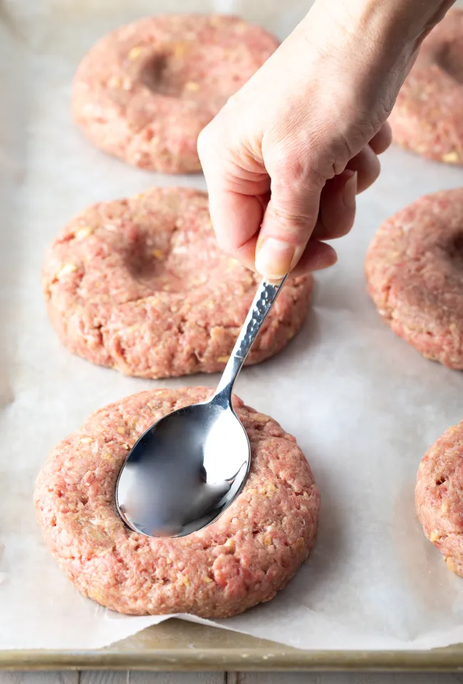

Home made hamburgers are not only cheap, they freeze well and can be batch made so they are always ready when you need them!

Make burgers your way and have them come out flawless every time with what I consider to be the Best Hamburger Patty Recipe, in my humble opinion.
It’s a classic all-American recipe for mouthwatering burgers that can be cooked on the grill, on the stovetop, as thick 1/3 pound patties, or as ultra-thin griddle patties.
It’s helpful to save prep time and add lots of flavor to your patties by adding dried spices rather than fresh herbs to the hamburger mix. For instance, you can incorporate red pepper flakes for a spicier burger, a bit of cumin and chili powder for a Southwestern-inspired bite, or parsley and dill to create a Mediterranean taste.
It seriously only takes mere minutes to make restaurant-quality hamburgers from scratch. Prep your workspace and ingredients before getting started and you’ll be whipping out hot plates from your home kitchen (or backyard) in no time!
First, set out a large mixing bowl and add in the ground beef, crushed crackers, egg, Worcestershire sauce, milk, and spices.
Set out a baking sheet, lined with wax paper or foil, to hold the patties. One at a time, gather the patty mix and press firmly into patties of your desired thickness. You typically want hamburger patties to be slightly larger than the buns they’ll be served on since they’ll shrink a bit in the cooking process.
Place the formed patties on the baking sheet. With thick patties, press a dent in the center of each patty, so they don’t puff up while cooking.
You can stack the patties with sheets of wax paper between layers if needed.
Then, preheat the grill or a skillet to medium heat, approximately 350-400 degrees F.
For thick patties: Grill or fry the patties for 3-4 minutes per side for a medium burger.
For thin patties: Cook on the griddle for 2 minutes per side.
Ideally, you only want to flip your burgers once or twice during cooking.
Pro Tip: Homemade cooked hamburger patties will keep well tightly wrapped in plastic wrap, or in an airtight container, in the fridge for up to 3 days, or in the freezer for up to 3 months.
Back to Main Page